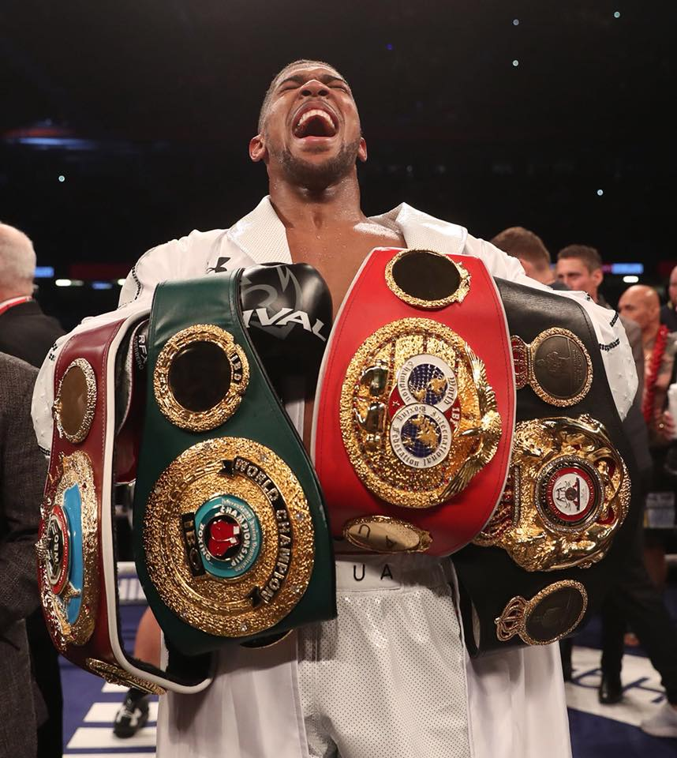
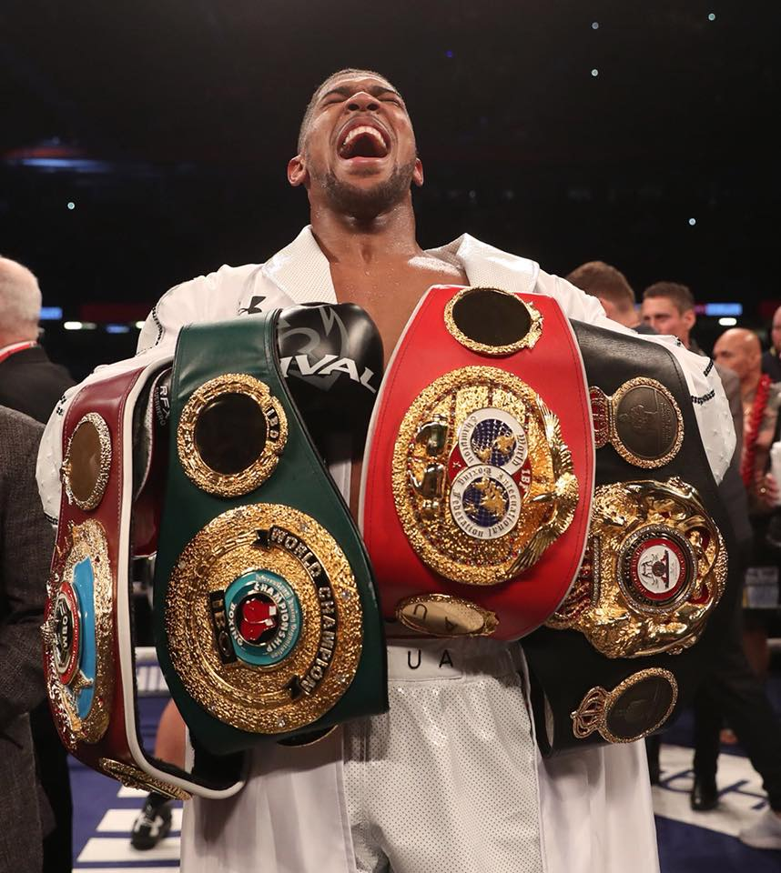
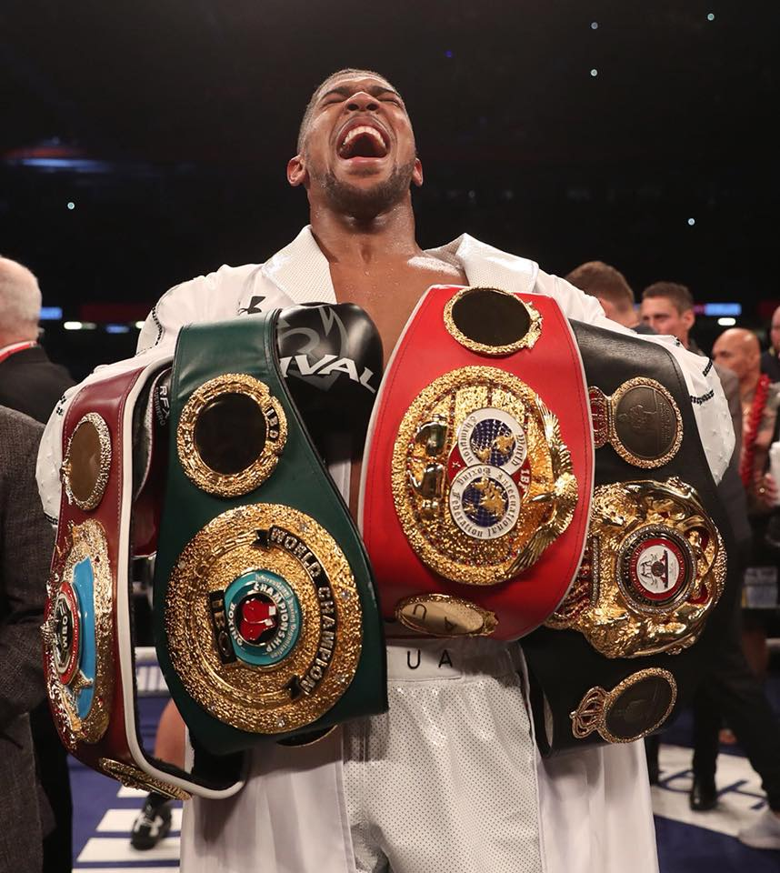
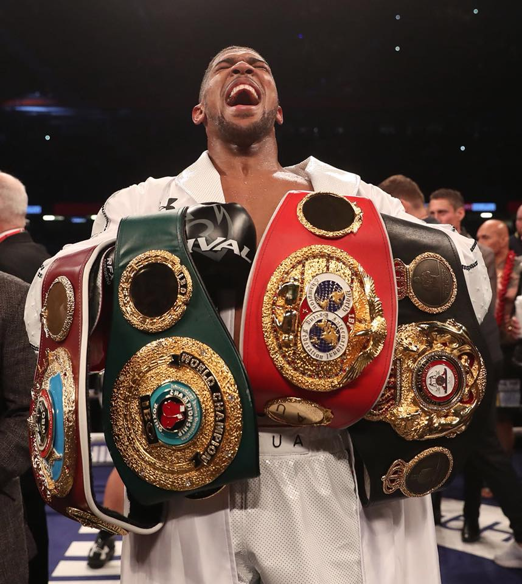

 

Billy Joe Saunders the former WBO Super Middleweight and Middleweight World Champion had to
undergo surgery following his clash with Saul Canelo Alveres back on the 8th May 2021.
He had suffered multiple fractures to the orbital of his right eye.
Trainer Mark Tibbs has recently been recieving praise for pulling Billy from the fight as
the Ninth round was about to start, most definitely saving Billy's career and most importantly his sight,
leaving Billy Joe fans world wide anxiosly waiting for news on his return.
In a recent interview with
Pro Beez
for Pep Talk UK his trainer Mark Tibbs wasn't allowing himself to say to much and kept
swerving any questions about Billy Joe saying that he had only been in contact via text messages since the
fight and that he couldn't possibly speak for Billy at this time. Leaving fans wondering if Billy will ever
return to the ring again.
Billy Joe in True Billy Joe style has taken to social media dropping little hints and clue as to whether he
will return, with many fans and insiders to the game confident of the former two weight Champion of the
worlds return to the game.
After at times making possibly one of the all time pound for pound greats look average, he has surely
cemented his place at the top with the elites of the game to be able to fight his way back into contention
with a competetive comeback fight.

Terri Harper the current Female WBC Featherweight Champion of the world was due to fight back in
mid-May in a bid to win the WBA belt in a unificationbout against Hyun Mi Choi.
The undefeated 24 year old brit had to pull out of the bout due to re-fracturing her hand in her final spar of
camp.
Harper had originally broke her hand when she fought Katherina Thanderz in November, an injury that required
surgery.
After falling out of love for the game Terri Harper bounced back after a chance text message from Stefy
Bull her trainer who has been influential on Terri Harper returning and turning pro.
Since turning pro Terri Harper hasn't looked back winning the WBC & IBO World Super-Featherweight Titles in only
10 bouts, with her only blemmish to her record a draw against Tasha Jonas at fight fight camp.